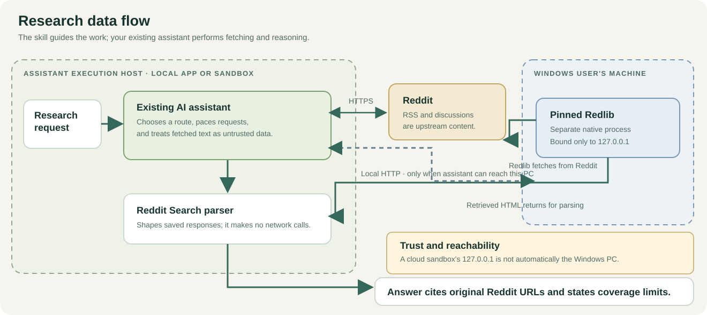
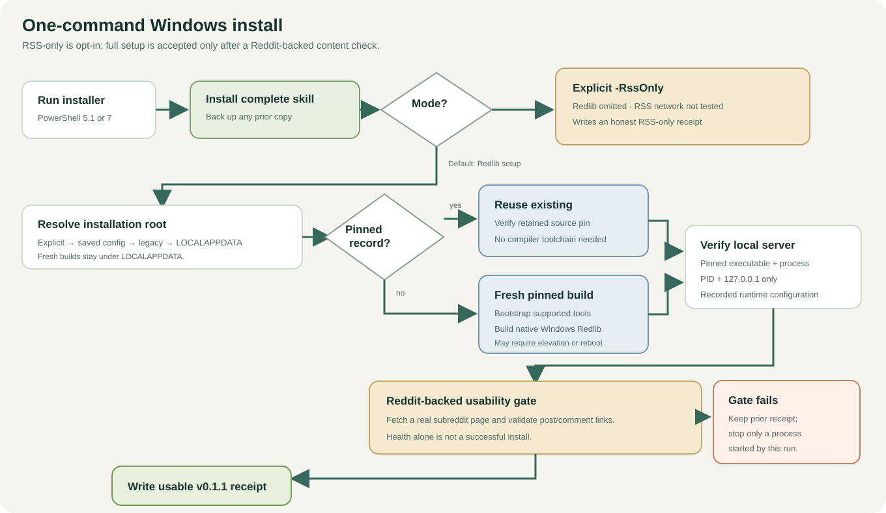

Reddit Search + Redlib — user manual
Project version 0.1.1 · Changelog
1. What you are installing
The skill teaches an AI assistant how to find, read, and summarize Reddit discussions. It includes a Python helper that constructs URLs and converts saved responses into structured records. The helper does not search by itself: your assistant fetches the pages and follows the skill's request limits.
Redlib is a separate service that retrieves Reddit content and presents it as HTML. The Windows installer sets it up by default; choose its explicit RSS-only mode if you want to omit it. The skill can use Redlib HTML to recover fuller posts and available comment structure.

Open the full-size architecture diagram.

2. Choose your app
Codex
Download and extract the release ZIP.
From the folder containing its top-level
reddit-searchfolder, run this explicit Windows setup command:powershell.exe -NoProfile -ExecutionPolicy Bypass -File .\reddit-search\scripts\install_windows.ps1This installs or updates the complete skill and provisions or reuses local Redlib. Windows PowerShell 5.1 can run the entrypoint; it installs/reuses PowerShell 7 and relaunches itself there. Fresh Redlib builds bootstrap missing Python, Git, Rust/MSVC, CMake, NASM, and LLVM where supported. Existing pinned Redlib installs do not require the compiler toolchain.
Wait for the installer receipt. It reports Redlib usable only after a live Reddit-backed content request succeeds. If you want RSS only, explicitly add
-RssOnly; the receipt will say Redlib was omitted and RSS was not live-tested.Start a new turn and ask: “Use the reddit-search skill to find recent discussions about [topic].”
The ZIP does not execute anything when unpacked. If the assistant or host has a different supported skill directory, pass it as -SkillDirectory.
DeepSeek Harness
DSH can load the same folder through its filesystem skill provider. A project-local installation can live at .dsh/skills/reddit-search in the project root. For availability across projects, use the DSH home skills directory or configure the existing @deepseek-ai/dsh-skill-filesystem row in your agent preset:
- id: skill-filesystem
name: '@deepseek-ai/dsh-skill-filesystem'
config:
customSkillDirs:
- 'C:/path/to/reddit-search-redlib/skills'
Edit the existing row; do not add a duplicate provider. The preset also needs DSH's skill catalog/loader components, normally supplied by its standard composition. Do not put this in an MCP configuration: the package is a skill, not an MCP server.
Verify reddit-search appears in the session's skill menu/catalog, then explicitly select it for the first search. Our Halo deployment verified discovery; a model completing research in DSH remains a separate check.
Claude Code
Copy reddit-search into ~/.claude/skills/ for personal use or .claude/skills/ within a project. Start a new session if needed and ask it to use reddit-search. Claude Code needs permission to run Python and fetch the requested URLs.
See Claude Code's skill documentation. Compatibility is based on the skill format; this project has not independently completed a Claude Code live trial.
Claude Desktop and Cowork
Where your account offers custom skills, upload reddit-search-redlib.zip through the Skills UI and enable it. The ZIP has one top-level reddit-search folder. See Claude's custom skill instructions.
Skill availability does not establish access to your local machine. A sandbox's 127.0.0.1 may refer to that sandbox rather than Windows. Start by testing RSS, then verify access to the configured Redlib endpoint from the actual execution environment. Don't assume a desktop window means local execution.
3. First search
Use a bounded request with an explicit invocation:
Use reddit-search to compare owners' experiences with [two products]. Read up to three relevant discussions. Include dates and direct links, separate recurring problems from isolated anecdotes, and report any inaccessible or missing comments.
A useful result should identify the discussions read, their dates, and the limits of coverage. It should not cite a Redlib host as the permanent source. Citations should point to the original www.reddit.com discussion or comment.
The skill can be selected automatically when its description matches your request, but host/model selection is not guaranteed. If it uses another provider, explicitly select reddit-search and inspect the reported tool activity.
4. Optional local Redlib on Windows
The native Windows installer uses no WSL or containers. It builds a pinned Redlib revision rather than shipping a binary. The first build can take time and uses compiler resources.
Prerequisites: The complete Windows entrypoint can install or reuse PowerShell 7 and Python 3.10+. For a fresh Redlib source build, it also installs or reuses Git for Windows, Rust's MSVC toolchain, Visual C++ Build Tools with the C++ workload, CMake, LLVM/Clang, and a hash-verified NASM download. A complete pinned Redlib installation only needs Git for the retained-source pin check; the compiler toolchain is not required for reuse. Network failures, canceled elevation, and restart requirements are reported instead of being treated as success. The new bootstrap path is implemented but has not been exercised end-to-end; release-prep checks cover RSS-only and reuse of an existing pinned build.
Run the bundled one-command installer from the extracted release folder:
powershell.exe -NoProfile -ExecutionPolicy Bypass -File .\reddit-search\scripts\install_windows.ps1
This also copies the full skill into %USERPROFILE%\.agents\skills\reddit-search, keeps a backup of any prior skill, and checks a small Reddit-backed content response before it writes a success receipt. Add -RssOnly only when you want the skill without Redlib; that mode does not attempt Reddit network access.
The entrypoint chooses an explicit -RedlibInstallRoot first, then a root in its saved configuration, then %USERPROFILE%\TownReporterTools\Redlib, then %LOCALAPPDATA%\RedditSearch\Redlib. For a fresh build, use a root beneath LOCALAPPDATA. Existing install receipts and executables are checked against the pinned commit before reuse.

Open the full-size Windows setup diagram.

The saved mode and last successful setup receipt are stored in %LOCALAPPDATA%\RedditSearch\config.json; get_redlib_config.ps1 reads them. This is saved state, not a live health probe. Start and test before using Redlib for a new task:
powershell.exe -NoProfile -File .\reddit-search\scripts\get_redlib_config.ps1
Default Redlib location for a fresh build: %LOCALAPPDATA%\RedditSearch\Redlib.
Default address: http://127.0.0.1:18080.
The script pins source revision a4d36e954cf1bd64f209cd8868c5a29edc81b374. The displayed version may still say 0.36.0; compare the commit rather than the version alone. This pin was usable in the Windows trial, but Reddit's upstream behavior can change.
Start, check, stop
pwsh -NoProfile -File "$HOME\.agents\skills\reddit-search\scripts\start_redlib_windows.ps1"
pwsh -NoProfile -File "$HOME\.agents\skills\reddit-search\scripts\test_redlib_windows.ps1"
pwsh -NoProfile -File "$HOME\.agents\skills\reddit-search\scripts\stop_redlib_windows.ps1"
You can instead ask your local assistant to perform these actions. When no -InstallRoot is supplied, the lifecycle scripts use the root saved in the successful configuration; without a configuration they use %LOCALAPPDATA%\RedditSearch\Redlib. An RSS-only saved configuration has no implicit Redlib root. The start script launches Redlib without a console window. Closing a browser tab does not stop it. No startup task or Windows service is installed; it must be started again after a reboot.
The test reports three separate states:
| State | Meaning |
|---|---|
| Installed | The executable and installation record exist |
| Running | At the time of the check, the expected local process answers health checks |
| Usable | A Reddit-backed content request also succeeds |
The configuration getter returns the last saved receipt; it does not check present server health. Use Redlib only when a fresh content gate is true. A failed content gate does not silently switch the saved mode or overwrite the previous successful receipt. A server started by that failed installer run is stopped; a preexisting process is left running. Choose RSS-only explicitly when you want to omit Redlib. Advanced endpoint and build details are in the Windows Redlib guide.
5. What the results mean
- Complete: For a retrieved Redlib thread, the parser found as many comment bodies as the page reports and no detected “more” placeholders. This is relative to that response, not a guarantee of every Reddit comment ever posted.
- Partial: Some content is omitted or the RSS format cannot establish complete coverage.
- Unknown: The response does not supply enough information to establish completeness, as with search pages.
Scores are observations at fetch time, not proof that a claim is true. Null means unavailable, not zero. RSS cannot reliably establish nested comment parents, so those fields remain null. Redlib provides nesting where its HTML includes it.
Request pacing and retry limits are instructions followed by the assistant, not a system-wide traffic limiter. Multiple agents sharing an IP need coordination. On rate limits, honor Retry-After and stop within the task budget; do not hammer or rotate through public servers.
6. Troubleshooting
| Symptom | What to check |
|---|---|
| Skill is missing | Correct host directory; reddit-search/SKILL.md is one level below it; no extra nested folder; new turn/session |
| Assistant uses native search | Explicitly select reddit-search; check for older conflicting skills or host instructions |
| Connection refused on 18080 | Redlib is stopped, or your host is inside a different sandbox |
| Health works, content fails | Run the usability check; upstream Reddit may be blocking access |
| HTTP 429 | Stop requests to that host, respect Retry-After, and report partial coverage if the budget expires |
| Thread parse failure | Save the status, content type, Redlib revision, and minimal relevant HTML; the upstream layout may have changed |
| Missing comments | Check retrieved vs reported counts; missing content is not a reason to claim completeness |
| Windows Unicode error | Ensure you are running the updated parser; it configures UTF-8 itself |
When reporting a bug, include the parser command, Python/PowerShell versions, Redlib commit if used, and the error. Remove private queries or credentials. Open an issue.
7. Update or remove
To update, back up the existing skill outside scanned directories, replace the whole folder with the new release, and start a fresh turn/session. Updating the skill does not automatically rebuild or update Redlib.
To remove, delete the installed reddit-search skill folder. If you also want to remove local Redlib, stop it first with its bundled script, then remove its %LOCALAPPDATA%\RedditSearch\Redlib installation directory. Redlib installed no automatic startup entry. Shared build tools such as Git, Rust, and Visual Studio are separate and should be retained if other projects use them.
8. For developers
The parser uses the Python standard library. It accepts saved content or stdin and emits UTF-8 JSON. It never chooses public instances or silently fetches a URL.
python skills/reddit-search/scripts/reddit_extract.py url rss-search --query "local LLM memory"
python skills/reddit-search/scripts/reddit_extract.py parse rss --input saved.atom --source-url "https://www.reddit.com/search.rss?q=local"
python -m unittest discover -s skills/reddit-search/scripts/tests -v
python tools/build_package.py
The public tests use synthetic content with representative RSS/Redlib markup. Windows live-test results are documented in the README; CI checks parser behavior on Windows and Linux without requesting Reddit pages or building Redlib.